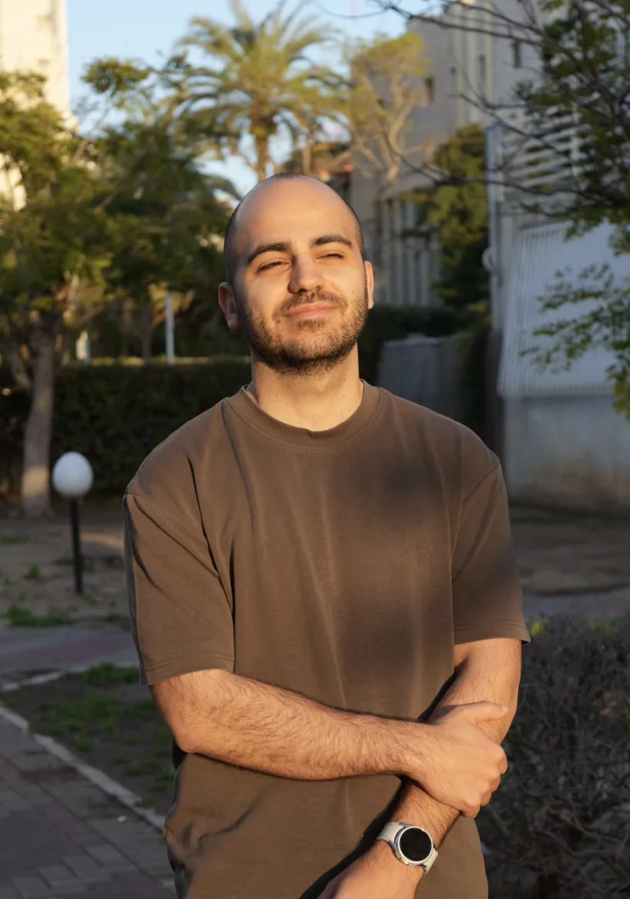

טסים עם ATTO
בוחרים חברת תעופה, ממלאים פרטים פעם אחת, ומקבלים קובץ מוכן לטיסה עם קלנועית.
- 13 חברות תעופה
- 4 שפות
- חתימה על המסך

מתאם הדגמות ב MovingLife ומוביל צוות שטח. כשמשהו בעבודה חוזר על עצמו או מבלבל לקוחות, אני בונה לו כלי. אלה הפרויקטים.
אתרים שלקוחות של MovingLife משתמשים בהם.
בוחרים חברת תעופה, ממלאים פרטים פעם אחת, ומקבלים קובץ מוכן לטיסה עם קלנועית.
אותו כלי לארה"ב, וכל חברה מציגה את הכללים שלה. טפסים רשמיים מתמלאים לבד.
מערכות פנימיות של MovingLife, בלי קישור ציבורי.
לקוח כותב בוואטסאפ, והבוט מתאם איתו הדגמה, מכניס אותה ליומן ושולח תזכורת. המנהלים מקבלים דוחות, וסוכני השטח רואים את היום שלהם באפליקציה.
כל ההדגמות של היום בטלפון. מצב נהיגה עם כפתורים גדולים, הודעת וואטסאפ מוכנה ללקוח, ואישור הגעה בלחיצה.
וגם לעצמי: כלי שמתרגם בזמן אמת את הדיבור במשחקי מחשב לכתוביות בעברית, עם זיהוי דיבור ו AI.